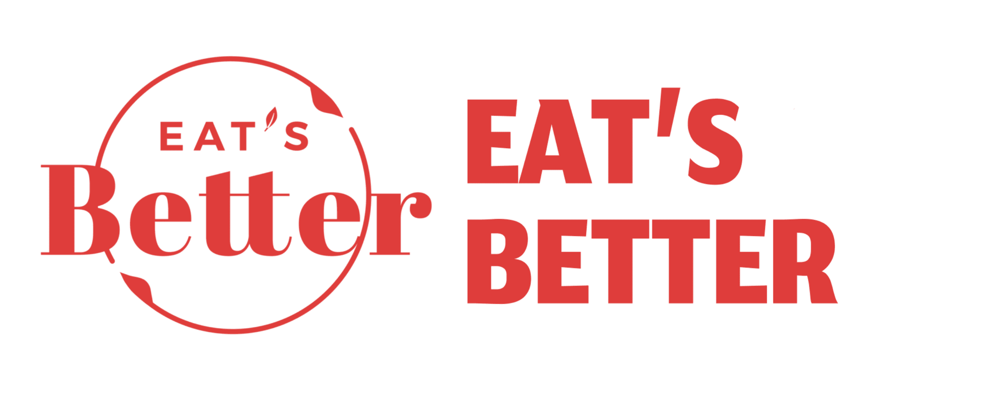

잇츠베러
더플랜잇

IT'S BETTER
플랜잇샵에서 판매되는 상품 브랜드인 잇츠베러는
영양 불균형 문제를 가진 현대인들의 지속가능한 건강식을 돕는 순 식물성 식품 브랜드 입니다.
영양 불균형 문제를 가진 현대인들의 지속가능한 건강식을 돕는 순 식물성 식품 브랜드 입니다.
CLICK

EAT PLANTS
FOR THE PLANET
더 플랜잇은 지속가능하고 맛있는 식물성 단백질 식품과 솔루션을 제공하는 기업입니다.
더 플랜잇은 생각했어요
망가지는 지구와 지속되는 소비 사이에서 우리가 할수 있는 일은 무엇일까?
총 탄소 배출량의 25%를 만들어내는 식품생산
그리고 그 탄소배출량의 대부분을 만들어내는 육류생산 과정.
우리는 육류의 소비량이 늘어나며 생긴 문제점을 돌아보았어요
육류의 과소비로 인한 축산,
및 탄소 배출 그리고 비만, 당뇨등의 질병.
그 모든 문제를 해결하는 최고의 방안을 위해
더플랜잇은
Eat Plants, For The Planet ( 지구를 위해서 식물을 먹자 ) 를 슬로건으로
기술발전과 더불어 인류와 자연의 공존을 고민하면서
최선의 솔루션을 낸다는 목표를 위해
순식물성 식품 개발 사업에 참여하였습니다